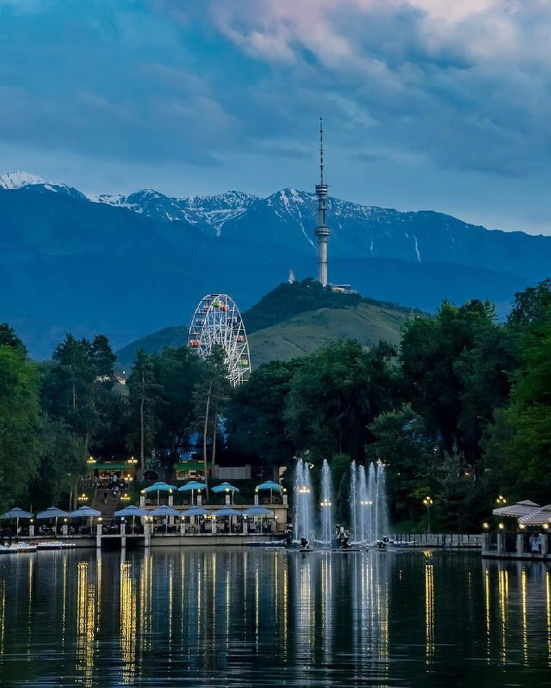
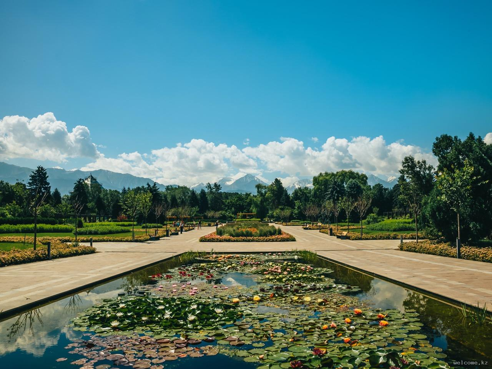
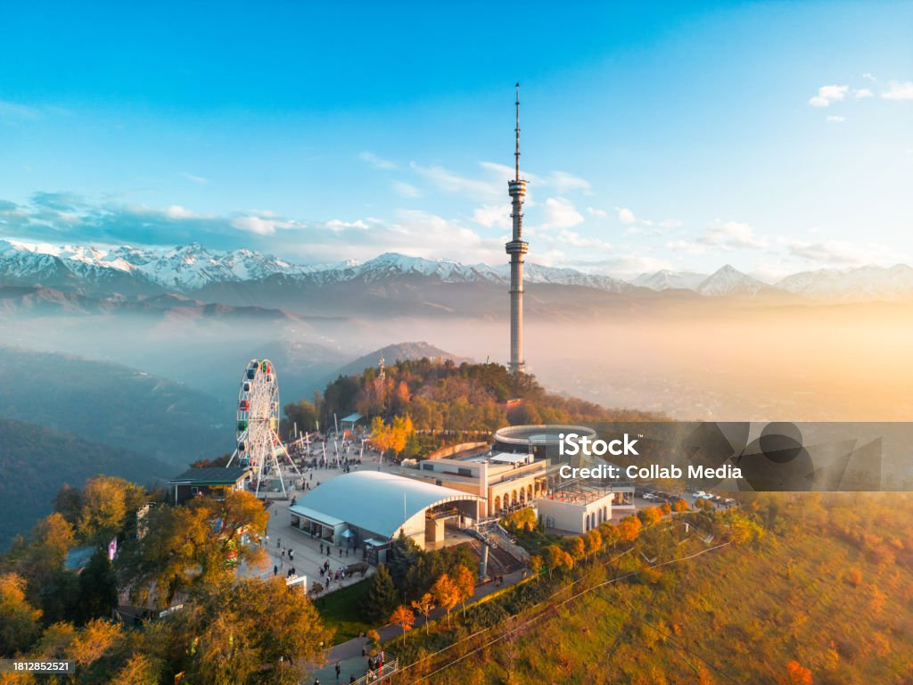
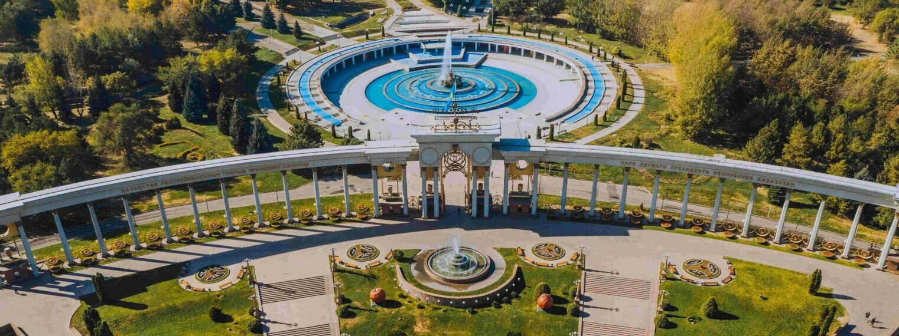

Популярные парки Алматы

Парк Горького
Один из самых известных парков Алматы. Здесь есть аттракционы, аллеи для прогулок и зоны отдыха для всей семьи.

Ботанический сад
Зелёное сердце города: редкие растения, прогулочные дорожки и место для спокойного отдыха.

Кок-Тобе
Гора с панорамным видом на Алматы, парком развлечений и смотровыми площадками.

Президентский парк
Современный парк с фонтанами, архитектурными композициями и просторными аллеями.